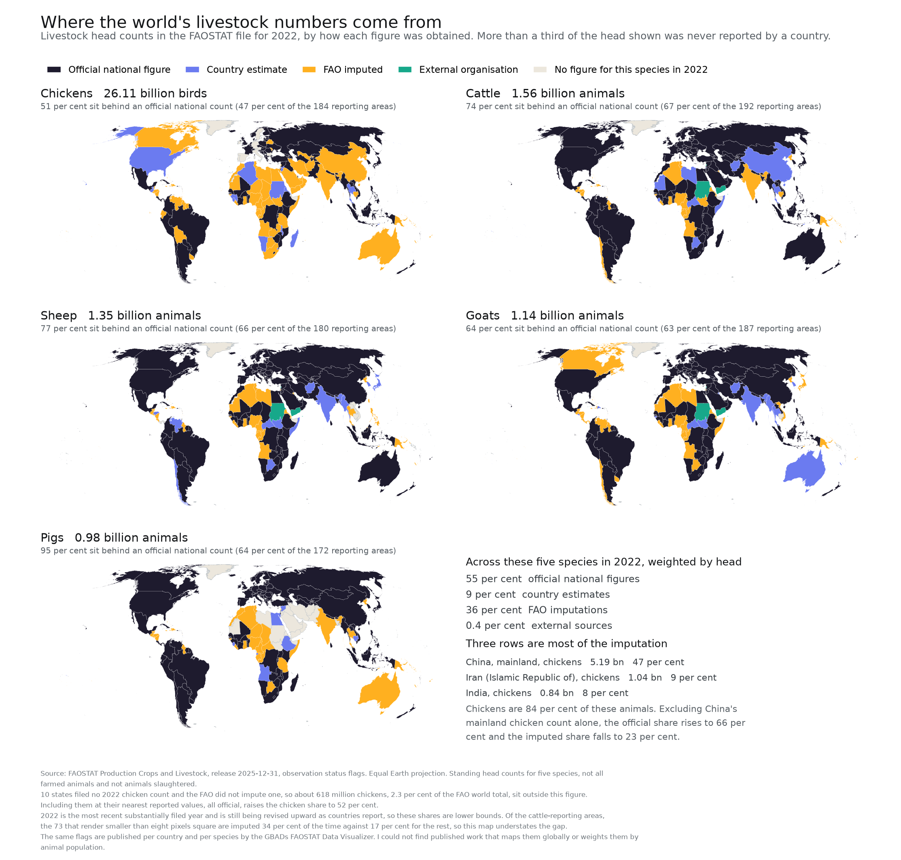

A map of what we count
I mapped every country's 2022 livestock figure by where the number came from. Of 31.1 billion cattle, sheep, goats, pigs and chickens, 55.1 per cent sit behind an official national count and 35.7 per cent behind an FAO imputation. Chickens are 83.9 per cent of the animals and the worst counted of the five. One row, China's mainland chicken count, is 46.7 per cent of everything imputed. Built with Claude Code in about four and a half hours.
Open the story mapThe AI tools available now to the average person are genuinely remarkable, and I don’t think most people have caught up with what that means, nor used them enough to feel it viscerally. From my own experience, an afternoon with an agentic coding tool covers ground that might have taken me weeks or months. And the output isn’t rubbish either; it’s often better than what I would have produced alone. I have tried to become AI-fluent in this rapidly evolving landscape, and the thing that keeps surprising me is not the code quality, but how cheap the first attempt at any question has become.
That matters a great deal, I think, for people who want to help animals. Farmed animal advocacy is a small and thinly staffed field. The 211 organisations across 50 countries surveyed for the 2024 State of the Movement report spent US$259.6 million between them, two thirds of them ran on fewer than ten full-time staff, and Animal Charity Evaluators estimates that around 3 per cent of American animal-charity funding goes to farmed animals against roughly 95 per cent for companion animals. 1 Much of that work leans on public datasets like the FAO's, and Rethink Priorities showed in 2019 that they carry inconsistencies worth checking before decisions are built on them. 2
I care greatly about reducing the suffering animals experience, and my path to engaging with this has been roundabout and thoroughly non-traditional: mechanical engineering to applied maths to Bayesian signal processing on cycling aerodynamics. None of this was overly intentional, but I’m trying to be deliberate about it now (better late than never). This work is the first small piece.
Overview
Below is a small project built with Claude Code over about four and a half hours of active work spread across three days, almost entirely on Opus 5, with one batch of parallel review agents on a second model. 3 4 Sixteen typed messages from me, start to finish. 5
It began with nothing more specific than wanting to make an interesting visualisation out of public data. The FAO's statistics database came up, and when I went to look at it I found what I presume a lot of people find: it is a serious, carefully built and rich resource, but it is close to impossible to see. 6 You select a country, a species and a year, and you read a table. I don’t see in table-space, but perhaps you do, in which case ignore this whole article.
So the initial goal was modest. Just get that data into a picture. This is a trivial task for anyone who knows how to code, but even for the experienced it does take some amount of time and there are always little bugs along the way. Agentic coding is not without cost to time either, but that cost is lower, and I would argue that is a win in efficiency.
I’m a big fan of the framing in Oliver Burkeman’s Four Thousand Weeks: you have finite time as a woefully finite human, so you have to make hard decisions about what you put your attention towards, and you must confront the fact that compared to what you could achieve in life you will achieve relatively little. 18 All the more reason to focus your attention on things you really care about.
Visualising the data

Open the interactive map ↗Five species, one year, every country that files. The point of drawing it is that the pattern is not visible in a table and is obvious in a picture.
Of the 31.1 billion cattle, sheep, goats, pigs and chickens counted in 2022, 55.1 per cent sit behind an official national figure, 8.8 per cent behind the country's own estimate, 35.7 per cent behind an FAO imputation, and 0.4 per cent behind a figure from an external organisation. 7
That split hides the interesting part, which is the spread between species.
| Species | Head | Share of the five | Official |
|---|---|---|---|
| Chickens | 26.11 bn | 83.9% | 51.0% |
| Cattle | 1.56 bn | 5.0% | 74.3% |
| Sheep | 1.35 bn | 4.3% | 76.7% |
| Goats | 1.14 bn | 3.6% | 63.9% |
| Pigs | 0.98 bn | 3.2% | 94.8% |
Chickens are 83.9 per cent of these animals and the worst counted of the five. Pigs are the best counted and are about three per cent of the total.
The imputation turns out to be concentrated rather than spread evenly. One row, China's mainland chicken count at 5.19 billion birds, is 46.7 per cent of all the imputed animals in the set. Take that single row out and the official share rises from 55.1 to 66.1 per cent. 10 That row was last flagged as an official figure in 1992. 11
Two smaller things I liked. The countries too small to see on a world map are the ones we know least about: of the 192 cattle-reporting areas, the 73 that render smaller than eight pixels square are imputed 34.2 per cent of the time against 16.8 per cent for everyone else. 12 And Australia, which I did not expect to be interesting, turns out to be the clearest single case in the dataset. Its cattle and sheep are official, its goats are a country estimate, and its chickens and pigs are FAO imputations, because the Bureau of Statistics abolished the surveys that counted them and has not replaced those counts. 13 14
Real counts do exist. ABARES publishes 2.704 million pigs alive at 30 June 2022, against the FAO's imputed 2,552,808. Australian Eggs puts the national layer flock at 24,890,517 hens in June 2025, while the FAO's own Australian laying-hen figure has been imputed every year since 2022 and stands at 16.5 million for 2024. 14 No Australian livestock series carries the external-organisation flag in 2021, 2022 or 2023, so those numbers are not reaching the file.
Related work
The Global Burden of Animal Diseases (GBADs) programme publishes great livestock dashboards, and several of them draw a map. 16 Every one of those maps colours a quantity. The broadest, on the animal health loss envelope dashboard, offers a choice of five: population, live weight, biomass, the animal health loss envelope, or that envelope per kilogram of biomass. The others colour population. None of them colours the provenance of any of those numbers. The dashboards that do carry flags have no map, and the map that carries five selectable layers carries no flag.
GBADs does pool flags in one place. Its FAOSTAT Data Visualizer has a view titled "Yearly Percentage of Flags for Asses Across all Countries", which is a global per-species flag composition as a stacked bar over years. That view counts each country once. Its percentages are exact multiples of one over the number of reporting countries, so a country with ten million cattle and a country with a thousand weigh the same. It says nothing about what share of the world's animals sits behind each flag.
So the two things that are new here are putting the flag on a map, and weighting it by animals rather than by countries.
Data
Figures come from the FAOSTAT bulk download, release 2025-12-31, pinned by SHA-256 so this can be reproduced exactly. 7 FAOSTAT also has a REST API, and it was down every time I tried it, on three separate days and from two different networks. 19
An obvious alternative was the GBADs data portal, which republishes FAOSTAT livestock populations. Its documented endpoint serves a snapshot frozen at February 2022: it stops at 2020, still uses the pre-2022 flag vocabulary, and about five per cent of shared cells differ from the current release. The clearest case is the United States chicken count for 2020, which GBADs reports as 9.22 billion flagged official, whereas FAOSTAT now reports 1.54 billion flagged estimated. That one cell is about a quarter of the animals in the five-species total GBADs reports for 2020. Reading it from the frozen copy would have raised the reported official share by roughly fourteen points, in the flattering direction, on a number wearing an official flag. 17
An interesting catch by Claude
The first version of this map drew Taiwan using the Dominican Republic's data, on four of the five panels. A manual override used Taiwan's FAOSTAT area code where the join needed its M49 code, and 214 happens to be the Dominican Republic's M49. Claude had written a coverage check for exactly this class of error, and the check could not see it, because one row failed to match while one extra geometry claimed another country's row, so the count came out identical on the broken input and the correct one. What did find it was pointing four independent review agents at the output on different briefs. All four found it. That is the part of this that I would actually recommend to someone else: the value was not in the drafting; it was in being able to afford four adversarial readers on a Sunday afternoon, and in the fact that eight of their own claims were overturned when I went and measured them. 3
This approach is not all that original
In July 2026 Google Research published the Science One Framework, an autonomous research agent built around what it calls a chain of evidence: every claim must have a recorded chain back to a source, and each chain must genuinely support its claim. Its audit re-runs code to confirm that reported numbers reappear, checks that the method described in the text matches the code that ran, and verifies references against academic databases. It is an experimental prototype, demonstrated on optimisation benchmarks and machine-learning competitions, and not something anyone outside the lab can use (yet). 15
I mention it because it is the same idea as this project, arrived at somewhat independently, albeit at a very different scale. Every figure here comes from one file that one script computes; a second script reads the prose back and fails on any number the file does not hold; and a checking page recomputes 48 quantities in your browser. The incident that best matches their method-to-code check is a key named species_matching_fao_world_exactly, computed with a tolerance, which put the word "exactly" into three documents before a fidelity pass caught it.
Where this project is weaker is that its evidence chains were reconstructed afterwards, by mapping every claim in this post to a source by hand, and three of them did not hold. Theirs are recorded at the moment the claim is made (that is the better design).
Some potential questions
Closing thoughts
This work was done on a Claude Max subscription over about four and a half hours. Given the quality of the outputs and the scope of tasks that are doable, the price of a first attempt seems very low, and that is a tantalising prospect for people working in animal advocacy or using data to try and drive change. The project itself is very minor, literally just a visualisation, but it shows that something that would once have needed a great deal of time, effort or money can now be done in an evening, on a subscription available to the average consumer. It seems the binding constraint is no longer whether you can afford to look into these problems, but whether you decide to point these incredible tools at something that matters. I hope to do this more.
Sources
Hover or focus any marker in the text to read its entry without leaving the paragraph.
- 1Stray Dog Institute, State of the Movement 2024, 28 April 2025. 211 organisations, 50 countries, US$259,585,231 in-scope expenses; 136 of 211 under ten full-time staff. With Animal Charity Evaluators, "Why Farmed Animals?" straydoginstitute.org/state-of-the-movement-2024 and animalcharityevaluators.org/charity-reviews/causes-we-consider/why-farmed-animals
- 2S. Šimčikas, "Accuracy issues in FAO animal numbers", Rethink Priorities, 5 December 2019 by the page's own byline and metadata; the EA Forum original, at a different URL, is dated 2 December. Checked 11 September 2026. rethinkpriorities.org/research-area/accuracy-issues-in-fao-animal-numbers
- 3Session transcripts, 4 to 7 September 2026. Active work 3 h 50 min counting gaps under five minutes, 4 h 38 min counting gaps under twenty, across four sittings. Longest sitting 3 h 05 min.
- 4Session transcripts, model split. 3,070 assistant messages: 96.3 per cent
claude-opus-5, 3.6 per centclaude-fable-5-1. Main thread 100 per cent Opus 5; the Fable work is one workflow of six review agents, about nine minutes on 6 September. - 5Session transcripts, sixteen human turns across the whole build.
- 6FAOSTAT, Crops and Livestock Products domain. The interface is a country, species and year selector over a table. fao.org/faostat/en/#data/QCL
- 7Pipeline output, github.com/tirios/faostat-livestock-flags/blob/master/out/numbers.json:
headline.total_head_millions31136.7,pct_official55.1,pct_country_estimate8.78,pct_fao_imputed35.71,pct_external0.4. Source archive pinned by SHA-256 atsource.archive_sha256, release 2025-12-31. - 8Pipeline output, github.com/tirios/faostat-livestock-flags/blob/master/out/numbers.json:
by_species.<Species>.share_of_set_pct. - 9Pipeline output, github.com/tirios/faostat-livestock-flags/blob/master/out/numbers.json:
headline.chickens_share_of_set83.9; per-species fromby_species.<Species>.head_billionsand.pct_official_by_head. - 10Pipeline output, github.com/tirios/faostat-livestock-flags/blob/master/out/numbers.json:
concentration.top3[0]gives China, mainland / Chickens / 5.19 bn / 46.7 per cent of imputed;concentration.excluding_china_chickens.pct_official66.1. - 11Pipeline output, github.com/tirios/faostat-livestock-flags/blob/master/out/numbers.json:
concentration.china_chickens_flag_history. Last flagged official in 1992, then country estimate and external source alternating to 2014, then imputed continuously from 2015. Computed from the series itself, which is inout/stocks.csv.gzin the same repository. - 12Pipeline output, github.com/tirios/faostat-livestock-flags/blob/master/out/numbers.json:
small_country_bias, species Cattle, threshold 64 px², areas 192, under threshold 73, imputed 34.2 per cent against 16.8. Measured on cattle only. - 13Pipeline output, github.com/tirios/faostat-livestock-flags/blob/master/out/numbers.json:
australia. Cattle A, Sheep A, Goats E, Chickens I, Pigs I, for 2022. - 14Australian Bureau of Statistics, Agricultural Commodities, Australia, 2020-21 (released 26 July 2022, the last Agricultural Census) and 2021-22 (17 January 2023, the final issue). ABS and ABARES, Modernising agricultural statistics: update on achievements and remaining data gaps, 29 October 2024, which lists under Remaining data gaps the line "Sheep, pig and poultry livestock counts". ABARES publishes 2.704 million pigs alive at 30 June 2022; Australian Eggs puts the national layer flock at 24,890,517 hens in June 2025. The FAO flags for Australia are in
out/numbers.jsonataustralia_case. abs.gov.au/statistics/industry/agriculture - 15Google Research, "Science One Framework: A verifiable autonomous research framework via Chain-of-Evidence", blog post dated 30 July 2026. The underlying preprint is arXiv 2605.26340, submitted 25 May 2026 under a different title, "ScientistOne: Towards Human-Level Autonomous Research via Chain-of-Evidence". Both checked 11 September 2026. research.google/blog/science-one-framework-a-verifiable-autonomous-research-framework-via-chain-of-evidence
- 16GBADs dashboards, audited live on 10 September 2026. gbadske.org/dashboards
- 17GBADs data portal, compared against the pinned FAOSTAT bulk on 10 September 2026. gbadske.org/api/dataportal
- 18O. Burkeman, Four Thousand Weeks: Time Management for Mortals, Bodley Head, 2021. The finitude argument runs through the book. The hard choices about attention are Chapter 1, The Limit-Embracing Life, and Chapter 2, The Efficiency Trap, which concludes that you cannot create time for what matters by optimising everything else. The point that you will achieve relatively little is Chapter 13, Cosmic Insignificance Therapy. The phrasing above is a paraphrase, not a quotation.
- 19FAOSTAT REST API, checked 8, 10 and 11 September 2026 from two networks.
fenixservices.fao.org/faostat/api/v1/en/...returns HTTP 521 at the Cloudflare edge, which is Cloudflare reporting that it could not open a connection to the origin rather than a block on the caller:www.fao.orgreturns 200 through the same edge, and a browser user agent makes no difference.faostatservices.fao.org/api/v1/en/...is served by CloudFront and returns 401 Missing Authorization Header. fenixservices.fao.org/faostat/api/v1/en/definitions/domain/QCL